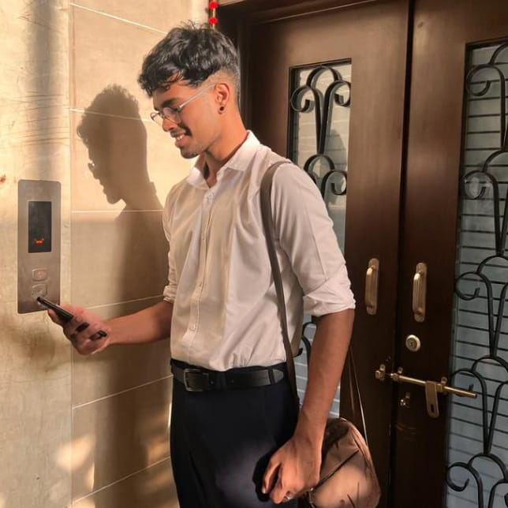

ESS-UNGA

Sarbhanga Mishra
Chair
An ardent MUNer from the Odisha circuit, Mr Sarbanga Mishra is pursuing his final year of a bachelor's degree at Christ University, Bangalore. As a delegate, Mr Mishra has bagged more than 40 Best Delegate awards, most of which are from prestigious institutions in India. Being part of the Indian MUNing circuit since 2014, he has chaired numerous institutional MUN conferences based in sundry circuits of India. He is well known for being an executive board member who has mastered the technicalities of MUNs, adding to his credibility and impeccable MUNing skills. He brings a plethora of knowledge and an ability to moderate committees to the best of his powers, with utmost rectitude owing to his 170+ MUN experience. Besides being an MUNer, he is a martial artist, poet, writer and academician who has authored various research papers and bagged best research paper awards from reputed institutions in India. Furthermore, he takes a keen interest in International law and International relations, which he describes as his "metaphorical crushes".
Chaitanya Kavy Dhruv is a writer who likes to write and make jokes. Apart from debating, he is a poet/writer and a political/social activist and is currently pursuing Journalism at Amity University, Noida. He has been a part of the MUN circuit for over five years and has done over 75 MUNs. He's a liberal who believes in justice for all, a feminist who believes in inequality for the living, and an agnostic who preaches what he thinks.
